library(tidyverse) # Conjunto de pacotes para manipulação e visualização de dados
library(GGally) # Visualização de dados de maneira eficiente.
library(factoextra) # Análise e visualização de resultados de métodos de clustering
library(ggrepel) # Adicionar rótulos em gráficos sem sobreposição
library(plotly) # Gráficos interativos
library(cluster) # Análise de clusters4 Consumo de bebidas alcoólicas em diversos países
Neste relatório, vamos explorar um conjunto de dados sobre o consumo de bebidas alcoólicas em diversos países. Vamos utilizar técnicas de análise de dados e aprendizado de máquina para entender padrões de consumo e identificar grupos de países com comportamentos similares.
A fonte dos dados é a página FiveThirtyEight e os dados podem ser baixados neste repositório, no arquivo drinks.csv.
Esta base de dados contém informações sobre o consumo de álcool em diferentes países, com as seguintes colunas: “country” (país), “beer_servings” (porções de cerveja), “spirit_servings” (porções de destilados), “wine_servings” (porções de vinho) e “total_litres_of_pure_alcohol” (total de litros de álcool puro consumidos). Esses dados foram coletados pela Organização Mundial da Saúde (OMS) e fornecem uma visão abrangente dos hábitos de consumo de álcool em todo o mundo. As informações incluem a média de consumo de álcool por pessoa em cada país, desagregada por tipo de bebida alcoólica, como vinho, cerveja, destilados e outras. Esses dados são apresentados em litros de álcool puro consumidos em 2010, mas foram convertidos em unidades mais compreensíveis, como taças de vinho, latas de cerveja e doses de destilados por pessoa em cada país.
4.1 Pacotes Utilizados
Vamos começar carregando as bibliotecas necessárias para realizar as análises. Ao lado de cada pacote, há um comentário sobre a utilidade de cada um deles nesta análise.
4.2 Carregando e Preparando os Dados
# Leitura e mudança de tipo da variável total_litres_of_pure_alcohol
dados <- read_csv2("data/drinks.csv") |>
mutate(total_litres_of_pure_alcohol = as.numeric(total_litres_of_pure_alcohol))
# Renomeando colunas
dados <- dados |>
rename(beer = beer_servings,
spirit = spirit_servings,
wine = wine_servings,
total_litres_alcohol = total_litres_of_pure_alcohol)
# Primeiras linhas dos dados
dados |>
slice_head(n = 5)| country | beer | spirit | wine | total_litres_alcohol |
|---|---|---|---|---|
| Afghanistan | 0 | 0 | 0 | 0.0 |
| Albania | 89 | 132 | 54 | 4.9 |
| Algeria | 25 | 0 | 14 | 0.7 |
| Andorra | 245 | 138 | 312 | 12.4 |
| Angola | 217 | 57 | 45 | 5.9 |
4.3 Análise Exploratória
Vamos realizar uma análise exploratória inicial para entender a distribuição das variáveis e identificar possíveis padrões nos dados. Primeiramente, avaliando a relação entre as variáveis numéricas.
dados |>
select(-country) |>
ggpairs()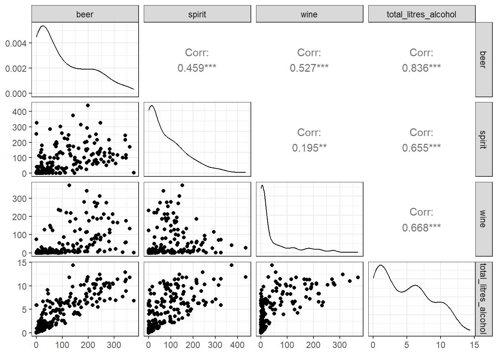
No caso desses dados sobre consumo de bebidas alcoólicas em diferentes países, observamos que as porções de cerveja estão fortemente correlacionadas com o total de litros de álcool puro consumidos (correlação de 0.84)., o que sugere que o consumo de cerveja é um grande contribuinte para o consumo geral de álcool. Além disso, há uma correlação moderada entre porções de cerveja e porções de vinho (0.53), bem como entre porções de vinho e o total de litros de álcool puro (0.67), indicando que o consumo de vinho também está significativamente associado ao consumo geral de álcool. Por outro lado, as porções de destilados têm uma correlação mais fraca com as outras variáveis, sugerindo que o consumo de destilados pode ser menos influente no total de álcool consumido em comparação com cerveja e vinho.
Agora, vamos identificar os principais países em termos de consumo de diferentes tipos de bebidas alcoólicas.
Maiores Consumidores de Vinho
dados |>
select(country, wine) |>
arrange(desc(wine)) |>
slice_head(n = 5)| country | wine |
|---|---|
| France | 370 |
| Portugal | 339 |
| Andorra | 312 |
| Switzerland | 280 |
| Denmark | 278 |
Maiores Consumidores de Cerveja
dados |>
select(country, beer) |>
arrange(desc(beer)) |>
slice_head(n = 5)| country | beer |
|---|---|
| Namibia | 376 |
| Czech Republic | 361 |
| Gabon | 347 |
| Germany | 346 |
| Lithuania | 343 |
Maiores Consumidores de Bebidas Destiladas
dados |>
select(country, spirit) |>
arrange(desc(spirit)) |>
slice_head(n = 5)| country | spirit |
|---|---|
| Grenada | 438 |
| Belarus | 373 |
| Haiti | 326 |
| Russian Federation | 326 |
| St. Lucia | 315 |
4.4 Padronização dos Dados
Vamos padronizar as variáveis para realizar a análise de clusters. A padronização é importante porque os métodos de clustering, como o k-means, são baseados em medidas de distância entre os pontos de dados. Se as variáveis tiverem escalas diferentes, aquelas com variações maiores dominarão a análise, distorcendo os resultados. Normalizar os dados garantirá que todas as variáveis contribuam igualmente para a análise de cluster, resultando em agrupamentos mais corretos.
dados_pad <- dados |>
select(-country) |>
scale()4.4.1 Análise de Cluster
Agora, vamos utilizar o algoritmo K-means para agrupar os países em clusters com base no consumo de bebidas alcoólicas.
set.seed(1)
# obtem o kmeans considerando 2 clusters
k_medias <- kmeans(dados_pad,
centers = 2,
nstart = 10)A soma de quadrados total é mostrada abaixo.
# total SS (soma de quadrados total)
k_medias$totss[1] 768
Dica
O codigo abaixo faz a conta da soma de quadrados total, porém sem usar o resultado da função kmeans, o valor é calculado manualmente.
# armazena em um mesmo tibble os dados e o cluster estimado
auxiliar <- tibble(cluster = k_medias$cluster) |>
bind_cols(as_tibble(dados_pad))
auxiliar |>
transmute(beer = (beer - mean(beer))^2,
spirit = (spirit - mean(spirit))^2,
wine = (wine - mean(wine))^2,
total_litres_alcohol = (total_litres_alcohol -
mean(total_litres_alcohol))^2,
totss = beer + spirit + wine + total_litres_alcohol) |>
summarise(totss = sum(totss)) |>
pull(totss)[1] 768A soma de quadrados intra-cluster está no vetor $withinss, cada componente é referente à um cluster.
# within SS
k_medias$withinss[1] 100.7368 264.7697# total within SS (mesmo que k_medias$tot.withinss)
k_medias$withinss |>
sum()[1] 365.5065
Dica
O codigo abaixo faz o cálculo da soma de quadrados total intracluster (mesmo que o numero acima).
auxiliar |>
group_by(cluster) |>
transmute(beer = (beer - mean(beer))^2,
spirit = (spirit - mean(spirit))^2,
wine = (wine - mean(wine))^2,
total_litres_alcohol = (total_litres_alcohol -
mean(total_litres_alcohol))^2,
withinss = beer + spirit + wine + total_litres_alcohol) |>
summarise(withinss = sum(withinss))# A tibble: 2 × 2
cluster withinss
<int> <dbl>
1 1 101.
2 2 265.Portanto, quando os dados não estão agrupados em clusters, a soma total dos quadrados é de 768. No entanto, ao dividir os dados em dois grupos, a soma total dos quadrados dentro de cada cluster é de 365.51. Isso mostra que o processo de agrupamento reduziu a dispersão dos dados.
Definição do Número de Clusters
O método do cotovelo é uma técnica comumente utilizada para determinar o número ideal de clusters em uma análise de agrupamento (clustering), como no algoritmo K-means. Esse método envolve traçar um gráfico que mostra a relação entre o número de clusters e a soma dos quadrados intra-cluster. À medida que o número de clusters aumenta, a soma dos quadrados diminui, pois os clusters se tornam mais específicos. No entanto, em algum ponto, adicionar mais clusters não resultará em uma redução significativa na soma dos quadrados. Esse ponto é chamado de “cotovelo” no gráfico.
Portanto, o número de clusters ideal é geralmente escolhido no ponto em que a redução na soma dos quadrados se torna menos significativa, indicando que adicionar mais clusters não oferecerá muitos benefícios na explicação da variação nos dados. Note que esta escolha é subjetiva.
set.seed(123)
k <- 2:20
tibble(k = k) |>
mutate(w = map_dbl(k, ~ kmeans(dados_pad,
centers = .x,
nstart = 10)$tot.withinss)) |>
ggplot(aes(k, w)) +
geom_point() +
scale_x_continuous(breaks = k) +
geom_line()+
labs(x = "Número de Clusters (k)",
y = "Within-cluster Soma dos Quadrados")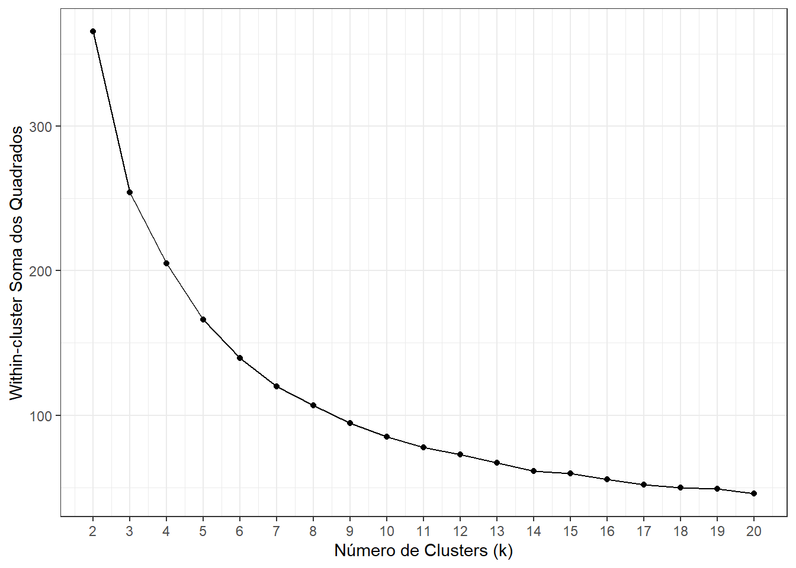
Através do método do cotovelo vamos considerar que o número de clusters, para este conjunto de dados é igual a 5.
set.seed(123)
descricao <- dados |>
mutate(cluster = factor(kmeans(dados_pad, centers = 5, nstart = 10)$cluster))
descricao |>
slice_head(n=5)| country | beer | spirit | wine | total_litres_alcohol | cluster |
|---|---|---|---|---|---|
| Afghanistan | 0 | 0 | 0 | 0.0 | 1 |
| Albania | 89 | 132 | 54 | 4.9 | 2 |
| Algeria | 25 | 0 | 14 | 0.7 | 1 |
| Andorra | 245 | 138 | 312 | 12.4 | 4 |
| Angola | 217 | 57 | 45 | 5.9 | 5 |
O próximo passo é entender as características de cada um dos grupos obtidos, analisando cada uma das variáveis.
descricao |>
mutate(cluster = fct_reorder(cluster,
total_litres_alcohol,
.fun = median)) |>
ggplot(aes(total_litres_alcohol,
cluster,
fill = cluster, group = cluster)) +
geom_boxplot(show.legend = F) +
labs(x = "Total de litros de álcool puro",
y = "Cluster")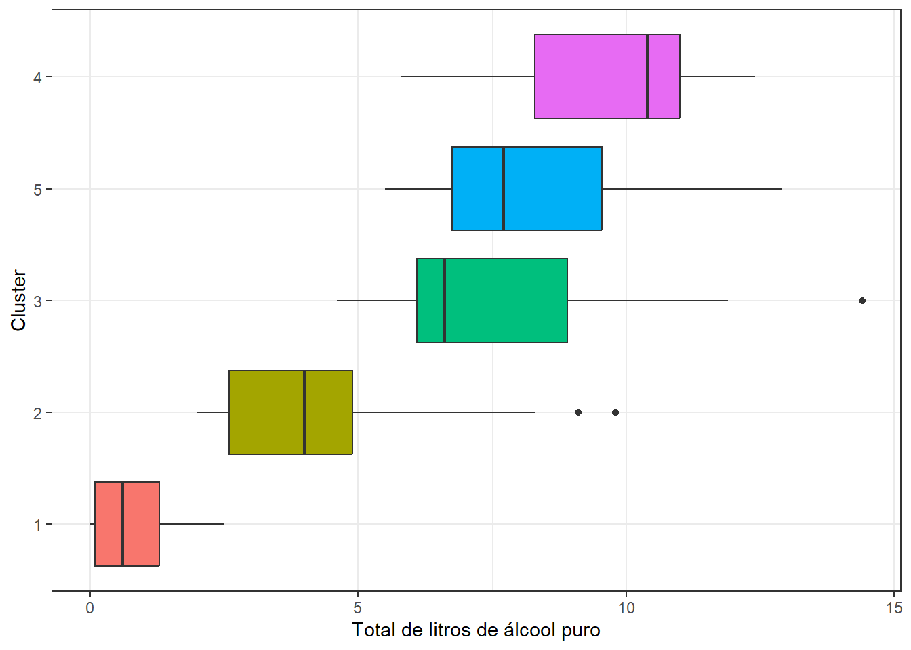
descricao |>
ggplot(aes(beer, wine, color = cluster)) +
geom_point() +
labs(x = "Consumo de Cerveja",
y = "Consumo de Vinho",
color = "Cluster")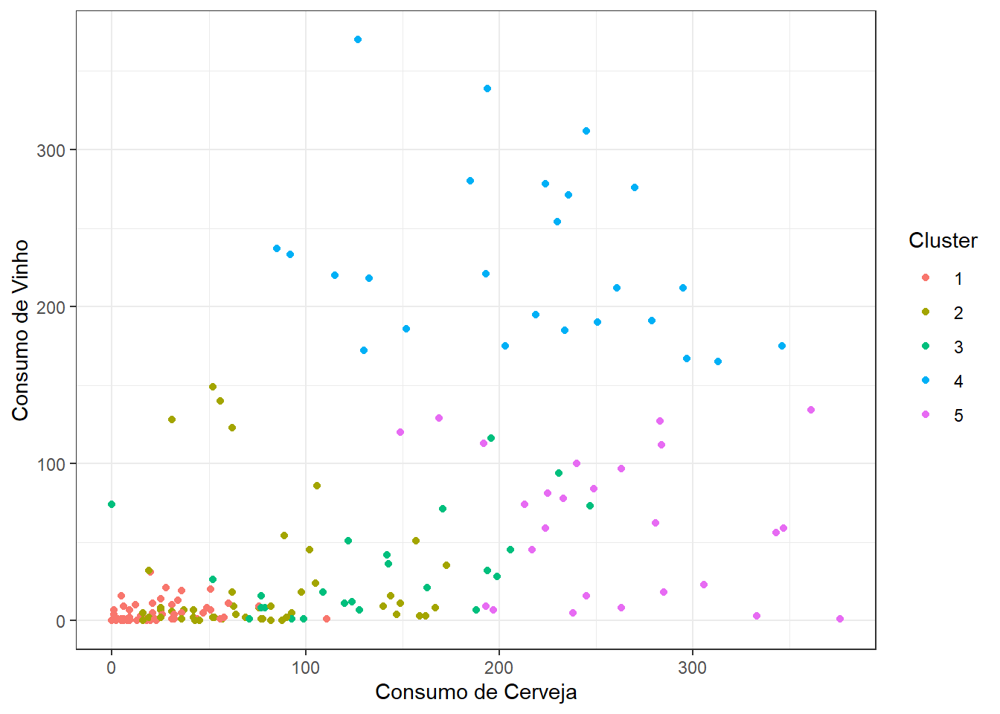
g1 <- descricao |>
ggplot(aes(spirit, wine,
color = cluster,
label = country)) +
geom_point() +
labs(x = "Consumo de Spirit (Unidades)",
y = "Consumo de Wine (Unidades)",
color = "")
ggplotly(g1)descricao |>
group_by(cluster) |>
summarise(across(where(is.numeric), mean))A tabela abaixo mostra o cálculo de medias de cada variável em cada grupo.
| cluster | beer | spirit | wine | total_litres_alcohol |
|---|---|---|---|---|
| 1 | 18.80597 | 9.925373 | 4.074627 | 0.7850746 |
| 2 | 74.20408 | 62.795918 | 21.653061 | 4.1612245 |
| 3 | 129.28000 | 248.560000 | 32.000000 | 7.6120000 |
| 4 | 212.36000 | 92.080000 | 229.360000 | 9.6960000 |
| 5 | 261.18519 | 124.962963 | 62.074074 | 8.1925926 |
Com base nos grupos identificados, podemos interpretar as características de cada um deles:
- Grupo 1: Este grupo possui a menor média de consumo de todas as variáveis, com valores relativamente baixos de consumo de cerveja, destilados e vinho. O consumo total de álcool é o mais baixo entre todos os grupos.
- Grupo 2: Este grupo apresenta um consumo moderado de cerveja, destilados e vinho, com valores médios para todas as variáveis. O consumo total de álcool é intermediário em comparação com os outros grupos.
- Grupo 3: Este grupo se destaca pelo alto consumo de cerveja e destilados, com valores muito acima da média em comparação com os outros grupos. O consumo de vinho também é elevado, mas menor em comparação com cerveja e destilados. O consumo total de álcool é o segundo mais alto entre os grupos.
- Grupo 4: Este grupo é caracterizado por um consumo muito alto de cerveja, vinho e destilados, com valores muito acima da média em comparação com os outros grupos. O consumo total de álcool é o mais alto entre todos os grupos.
- Grupo 5: Este grupo tem um alto consumo de cerveja, destilados e vinho, embora não tão alto quanto o Grupo 4. O consumo total de álcool é alto, mas menor que o do Grupo 4 e do Grupo 3.
Se tivesse que atribuir um nome para cada grupo, quais nomes você daria?
Podemos visualizar essas características através do gráfico abaixo.
descricao |>
group_by(cluster) |>
summarise(across(where(is.numeric), mean)) |>
pivot_longer(-cluster) |>
ggplot(aes(name, value, group = cluster, color = cluster)) +
geom_line() +
geom_point() +
labs(x = "",
y = "Valor medio",
color = "Cluster")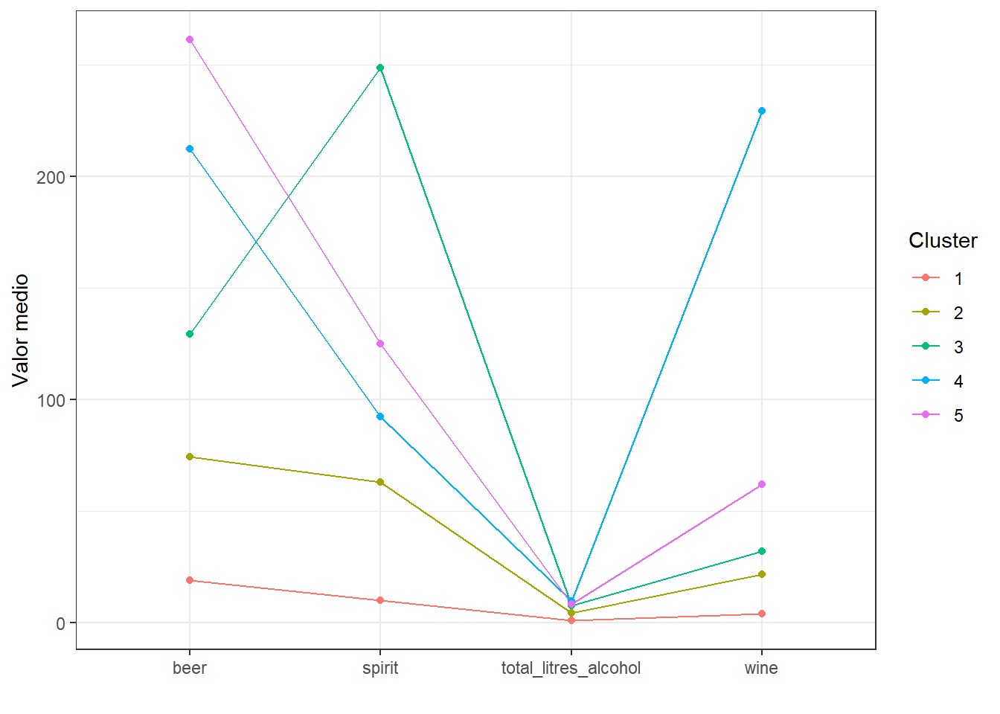
Uma alternativa ao gráfico acima (que mostra os valores na escala original) é o gráfico abaixo, que apresenta os valores padronizados.
descricao |>
mutate(across(where(is.numeric), scale)) |>
group_by(cluster) |>
summarise(across(where(is.numeric), mean)) |>
pivot_longer(-cluster) |>
ggplot(aes(name, value, group = cluster, color = cluster)) +
geom_line() +
geom_point() +
labs(x = "",
y = "Valor medio (padronizado)",
color = "Cluster")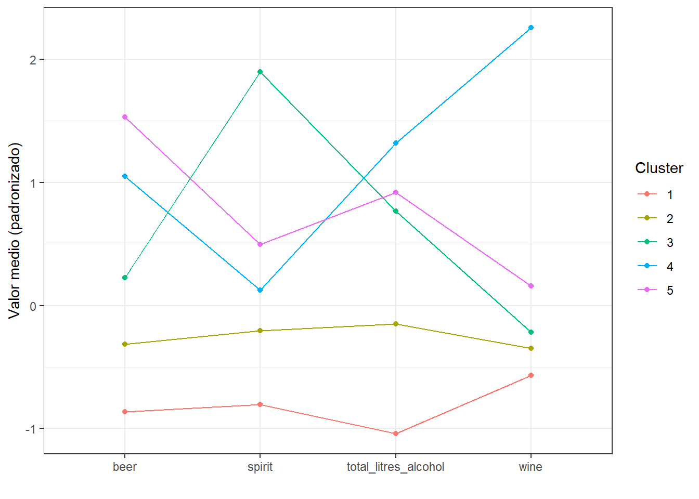
Cálculo do Coeficiente de Silhouette
O coeficiente de silhouette é uma medida de qualidade dos clusters em uma análise de cluster. Ele varia de -1 a 1, onde valores próximos de 1 indicam que os pontos estão bem agrupados no cluster, valores próximos de 0 indicam que os clusters estão sobrepostos e valores próximos de -1 indicam que os pontos foram atribuídos aos clusters errados.
O coeficiente de silhouette é calculado para cada observação e fornece uma medida da semelhança entre essa observação e os outros membros do mesmo cluster, em comparação com os membros de outros clusters.
Para calcular o coeficiente de silhouette para uma observação, são usadas duas métricas:
- \(a\): A distância média entre a observação e todas as outras observações no mesmo cluster.
- \(b\): A distância média entre a observação e todas as observações no cluster mais próximo que a observação não faz parte.
O coeficiente de silhouette para uma observação é então calculado como:
\[ \text{silhouette} = \frac{b - a}{\max(a, b)}. \]
O coeficiente de silhouette médio para todos os pontos em um cluster é a medida de silhouette para esse cluster. Quanto mais próximo de 1, melhor a separação dos clusters; quanto mais próximo de -1, mais inadequada é a atribuição do ponto ao cluster.
# obtem os coeficientes
res_sil <- silhouette(as.numeric(descricao$cluster),
dist(dados_pad)^2)A função abaixo obtem a media do coeficiente por cluster e gera um gráfico.
fviz_silhouette(res_sil)O código abaixo visualiza o número ótimo de clusters baseado no coeficiente de silhouette médio dos clusters. O gráfico resultante ajuda a encontrar o número ideal de clusters com base na separação entre os clusters e a coesão interna dos dados.
# grafico silhouette
fviz_nbclust(dados_pad, kmeans, method = "silhouette")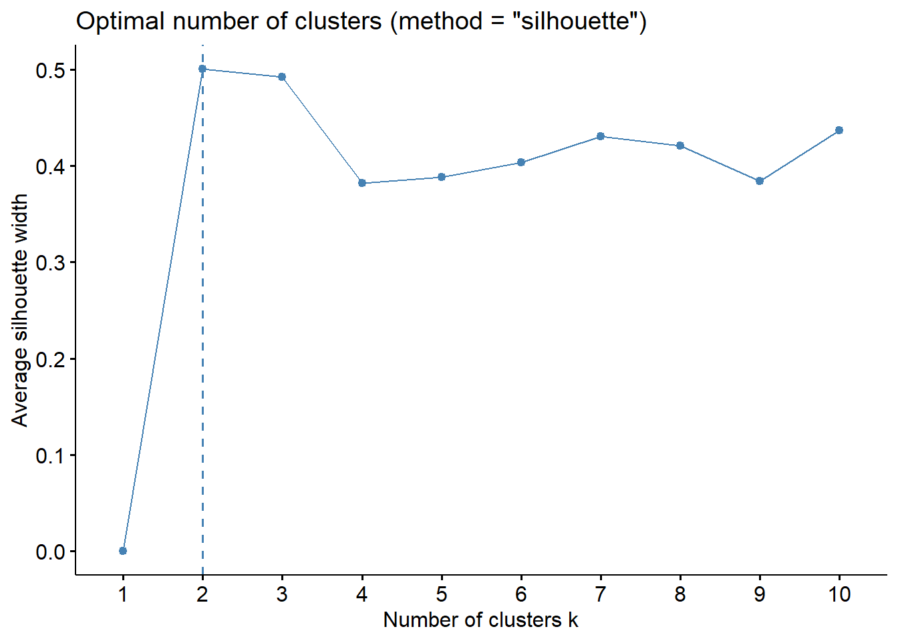
Ao observar o resultado do coeficiente de silhouette, concluímos que é melhor agrupar os dados em 3 grupos em vez de 5, como concluído através da análise do gráfico do cotovelo anteriormente.
Portanto, devemos executar novamente o modelo kmeans agora considerando \(k=3.\)
set.seed(1)
avaliacao <- descricao |>
mutate(cluster = factor(kmeans(dados_pad, centers = 3)$cluster))
avaliacao |>
ggplot(aes(total_litres_alcohol,
fct_reorder(cluster, total_litres_alcohol, .fun = median),
fill = cluster, group = cluster)) +
geom_boxplot(show.legend = FALSE) +
labs(x = "Total de litros de álcool puro",
y = NULL)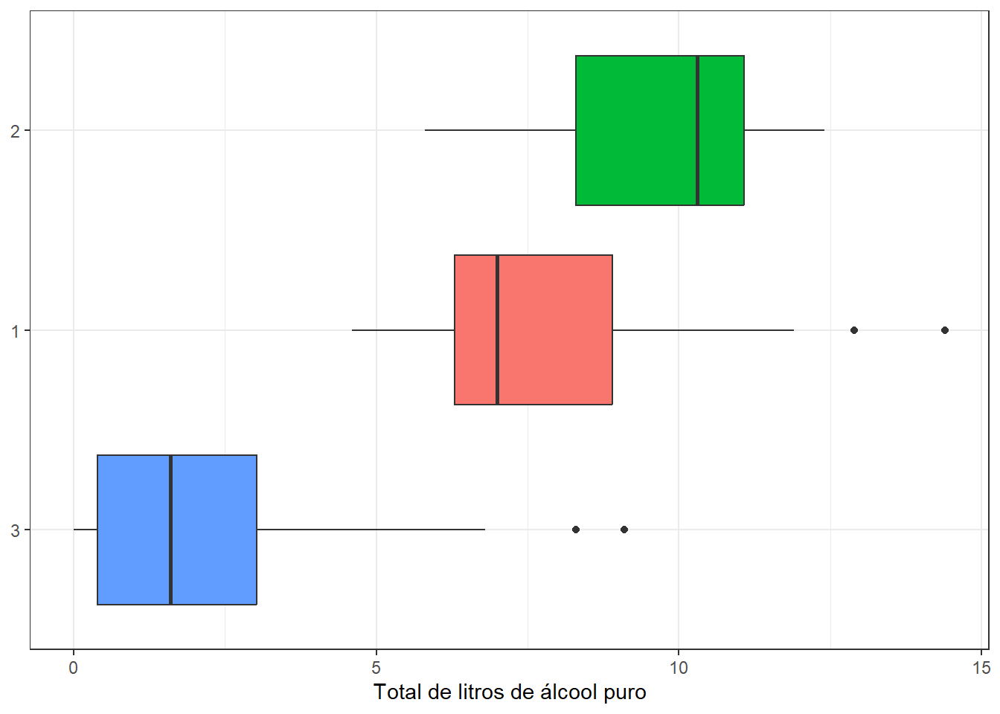
Vamos nomear os clusters encontrados.
avaliacao <- avaliacao |>
mutate(cluster = case_when(
cluster == 2 ~ "alto",
cluster == 1 ~ "intermediário",
TRUE ~ "baixo"))Finalmente, vamos visualizar as caracteristicas de cada cluster.
avaliacao |>
group_by(cluster) |>
summarise(across(where(is.numeric), mean)) |>
pivot_longer(-cluster) |>
ggplot(aes(name, value, group = cluster, color = cluster)) +
geom_line() +
geom_point() +
labs(y = "Valor", x = NULL, color = "Cluster")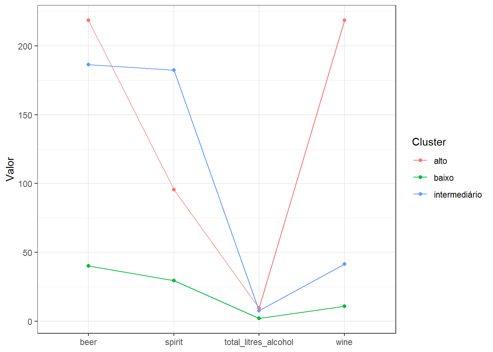
Visualização das caracteristicas de cada cluster considerando os dados padronizados.
avaliacao |>
mutate(across(where(is.numeric), scale)) |>
group_by(cluster) |>
summarise(across(where(is.numeric), mean)) |>
pivot_longer(-cluster) |>
ggplot(aes(name, value, group = cluster, color = cluster)) +
geom_line() +
geom_point() +
labs(y = "Valor", x = NULL, color = "Cluster")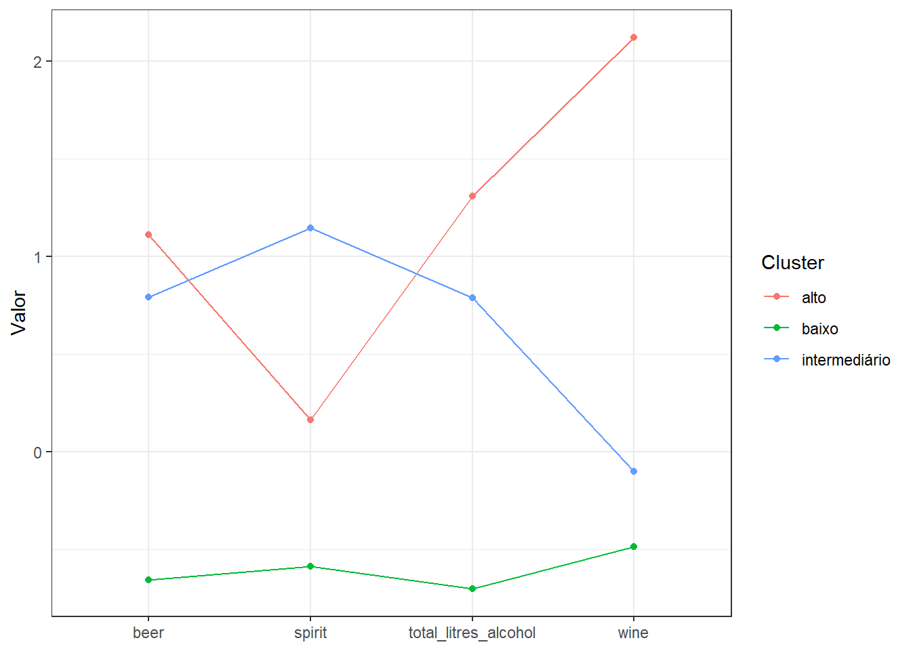
4.5 Visualização do resultado da clusterização no mapa-mundi
Note que antes de fazer o mapa, foi feito um trabalho de padronização dos nomes dos países nas duas bases, drinks.csv e na de mapas fornecida pelo pacaote maps.
library(maps)
mapa <- map_data("world")
g1 <- (avaliacao |> filter(cluster=="intermediário") |>
pull(country))
g1 <- c(g1, "Russia", "Bosnia and Herzegovina")
g2 <- (avaliacao |> filter(cluster=="alto") |>
pull(country))
g2 <- c(g2, "UK")
g3 <- (avaliacao |> filter(cluster=="baixo") |>
pull(country))
g3 <- c(g3, "Republic of Congo", "Cape Verde", "Ivory Coast",
"Democratic Republic of the Congo")
mapa_cluster <- mapa |>
mutate(fill = "NA") |>
mutate(fill = ifelse(region %in% g1, "Intermediário", fill),
fill = ifelse(region %in% g2, "Alto", fill),
fill = ifelse(region %in% g3, "Baixo", fill)) |>
mutate(fill = factor(fill, levels = c("Baixo", "Intermediário", "Alto", "NA")))
ggplot(mapa_cluster, aes(long, lat, fill = fill, group=group)) +
geom_polygon(colour="gray") +
scale_fill_manual(values = c("lightgreen", "lightblue", "salmon", "lightgray"))+
labs(x = NULL, y = NULL, fill = NULL) +
theme_void()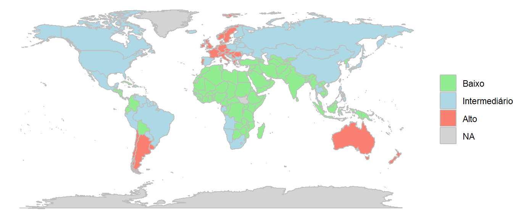
4.6 Conclusão
Neste relatório, exploramos os dados de consumo de bebidas alcoólicas em diversos países e utilizamos o algoritmo K-means para agrupar os países em clusters com base nesses dados. A análise nos permitiu identificar padrões de consumo e características distintas entre os grupos de países.